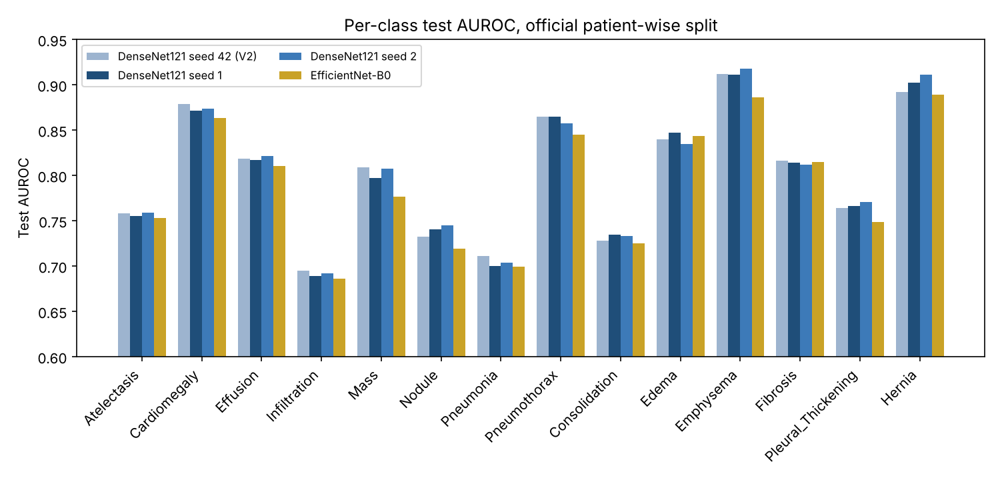
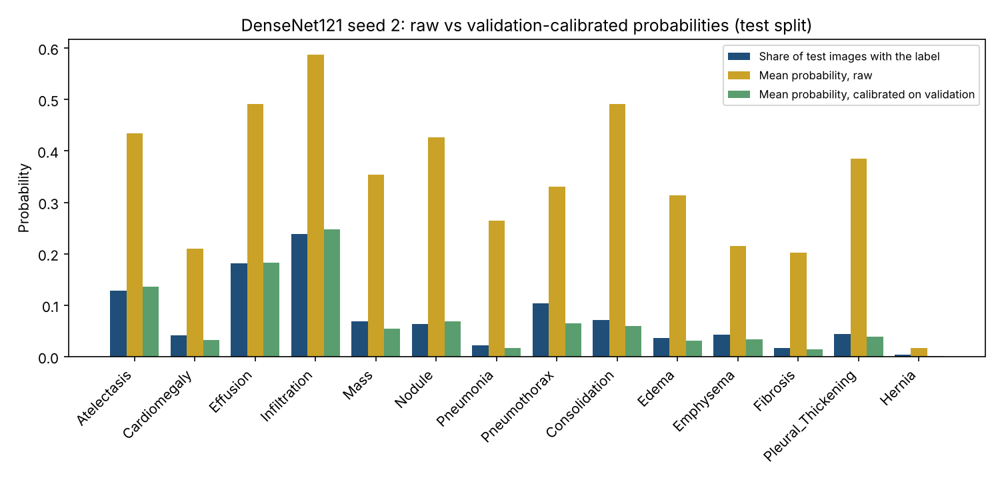
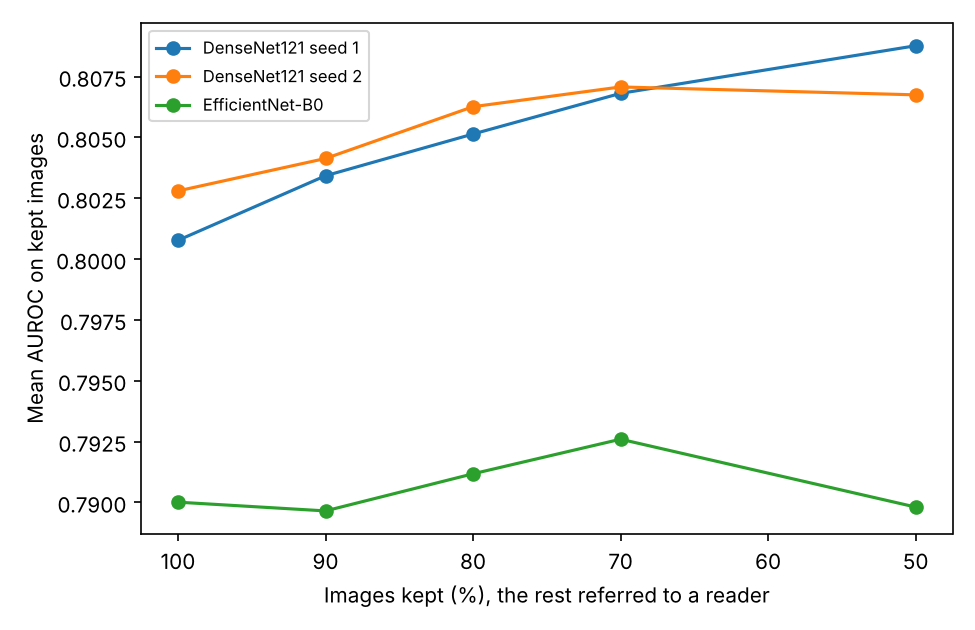
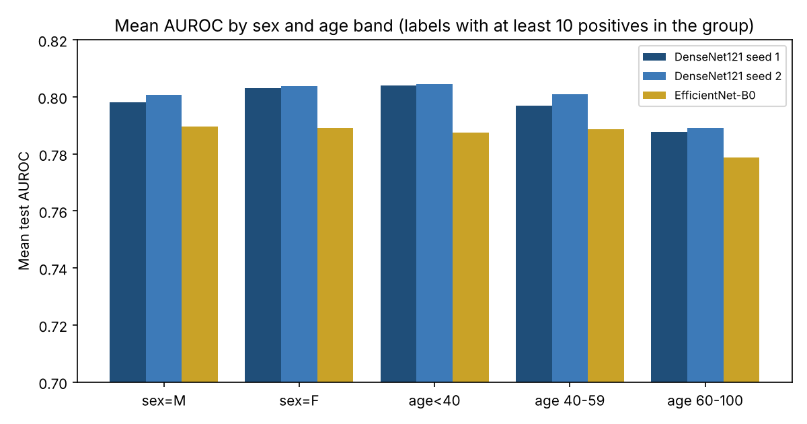
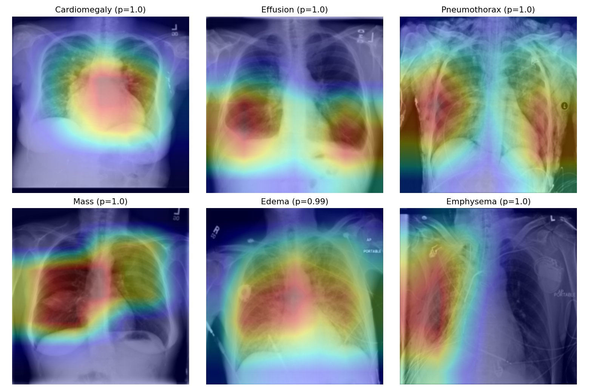

Experiment · Medical imaging
Three training runs, one bug and a sicker test set: what the second rebuild of my chest X-ray model showed
Yesterday's result held up across seeds and the probabilities can now be corrected properly. Two things did not hold up: one line of my own code, and the assumption that new patients look like old ones.
By Muzammal Hussain · 30 October 2026 · 5 min read
Correction, 31 October: an earlier version said the model was less reliable for patients under 40. That came from a single hernia case in that group; with enough positive cases per label, under-40 results match the rest. The section "Who does it work for?" has been updated.
Yesterday I wrote about rebuilding my chest X-ray model: DenseNet121 reached 0.801 mean AUROC on NIH ChestX-ray14, but its probabilities were several times too high. That post ended with a list of weaknesses: one seed, a correction fitted on the test set itself, and no look at who the model works for. Overnight I ran a second Kaggle notebook to deal with them. Most of the answers were reassuring. Two were not.
Key findings
- Three DenseNet121 training runs with different random seeds scored 0.801, 0.801 and 0.803. The result is stable, and gaps below about 0.003 should be treated as noise.
- Averaging the three runs' predictions gave 0.814, the largest gain in this round, with no extra training.
- A per-class correction fitted on the validation set, not the test set, cut the mean calibration error from 0.26 to 0.011 on the test set without changing the AUROC.
- The test set is much sicker than the validation set, and the correction did not fully carry over: pneumothorax came out under-predicted.
- Referring the least certain images to a person helped far less once the probabilities were corrected. A bug in my notebook first made it look harmful.
Does the result survive a different seed?
A seed fixes the random choices in training: the starting weights of the new layer and the order in which images are shown. A result that moves a lot with the seed is luck, not method. I trained DenseNet121 twice more with the same data, split and settings, and added EfficientNet-B0, a smaller and faster network, in the same pipeline.
| Model | Test mean AUROC | 95% interval (by patient) |
|---|---|---|
| DenseNet121, seed 42 (yesterday) | 0.801 | 0.796 to 0.806 (by image) |
| DenseNet121, seed 1 | 0.801 | 0.795 to 0.806 |
| DenseNet121, seed 2 | 0.803 | 0.797 to 0.808 |
| EfficientNet-B0 | 0.790 | 0.784 to 0.795 |
| Average of the three DenseNet121 runs | 0.814 | not computed |
The three DenseNet121 runs differ by 0.002 at most. This time the intervals come from resampling patients rather than images, because one patient can have many X-rays, and they are only slightly wider than yesterday's. EfficientNet-B0 trained in about half the time but finished 0.012 lower. Simply averaging the three DenseNet121 runs beat every single run by about 0.012. Each run makes slightly different mistakes, and averaging cancels some of them out.

Correcting the probabilities the clean way
Yesterday I corrected the probabilities with Platt scaling, a small logistic fit for each label, fitted on half of the test set and checked on the other half. That works, but the test set should only be used for the final check. This time the correction was fitted on the 8,805 validation images and applied unchanged to the 25,596 test images. Mean calibration error fell from 0.26–0.29 to 0.011 for all three models, and the mean Brier score from 0.17–0.20 to 0.058. The AUROC did not move, because the correction keeps the order of the scores.

One label stands out. For pneumothorax, air leaking around the lung, the corrected model says 6.5% on average, but 10.4% of test images have it. The reason is in the data: 62% of test images have at least one finding against 43% of validation images, and pneumothorax is 3.4 times as common in the test set. A correction learned on one group of patients assumes the next group is similar. Here it mostly was, but not for pneumothorax. A hospital using a model like this would need to recalibrate it on its own patients, and keep checking.
The bug, and what referral really does
I also tested a simple safety idea again: let the model keep the images it is most certain about and refer the rest to a person. The notebook's first output said this made things worse, from 0.801 down to 0.771. That made no sense, so I read the code. The line that sorts images by uncertainty reversed the list a second time, so the model was keeping its least certain images. I fixed the line, added a test that checks the order, and re-scored the saved predictions without retraining.

With the raw probabilities, keeping the 50% most certain images raises DenseNet121 seed 2 from 0.803 to 0.822. With the corrected probabilities the gain shrinks to 0.807, and for EfficientNet-B0 it almost disappears. The corrected probabilities are honest about how common each finding is, but their uncertainty says little about which images are hard. Disagreement between the three seeds may be a better signal. I have not tested that yet.
Who does it work for?

Men and women came out within 0.006 of each other for every model. The first version of this table also showed something alarming: for patients under 40 the score was lower and jumped between runs, from 0.741 to 0.796. When I counted the positive cases behind it, the explanation was simple. The under-40 test group contains exactly one image with a hernia. Its hernia AUROC is therefore decided by where one image lands in the ranking, anywhere from 0.14 to 0.69 across the runs, and that single number dragged the average of 14 labels around.
Averaging only over labels with at least 10 positive cases in the group, patients under 40 score 0.804, 0.804 and 0.788, the same as the test set as a whole. The oldest band, 60 to 100, is the lowest, by about 0.01. Sex and age make little difference to this model's ranking.
Where the model looks

For cardiomegaly the heatmap sits on the heart, and for effusion on the bottom of both lungs, where fluid collects. That is reassuring. For pneumothorax it spreads over both lungs instead of the lung edge where the air would be. Many pneumothorax patients in this dataset already have a chest drain, and models are known to learn the drain instead of the disease. These heatmaps cannot prove or rule that out. They are also the six easiest cases, picked because the model was most confident, so they show the best case, not the typical one.
What I take from it
- The headline number was not luck. 0.80 is what this set-up gives, and averaging a few runs is a cheap way to do better.
- Calibrated probabilities are only as good as the match between the patients they were fitted on and the patients they are used on.
- A result that looks wrong usually is. Reading my own code found the bug faster than any new experiment would have.
- Check the counts before reading a subgroup score. One rare case can make a whole group look unreliable when it is not.
Limitations
- Several seeds only for DenseNet121. EfficientNet-B0 and ResNet50 have one run each.
- Subgroup scores have no intervals, and labels with fewer than 10 positive cases in a group are left out of its average.
- 224x224 images with flips only, labels mined from radiology report text, and all images from one hospital.
- This is a research experiment, not a medical device, and must not be used for diagnosis.
Reproduce the experiment
The repository has both Kaggle notebooks, the saved validation and test predictions of every run, the analysis script and its unit tests. All tables and figures here come from python3 analyze_v21.py, which runs on a laptop in under a minute. Training the three new models took about four hours on a free Kaggle T4 GPU.
Data: NIH ChestX-ray14 (Wang et al., 2017), from the Kaggle dataset nih-chest-xrays/data. Related reading: Guo et al., 2017, on calibration of modern neural networks; Oakden-Rayner et al., 2020, on hidden stratification in medical imaging. This is a small engineering experiment, not a peer-reviewed paper.